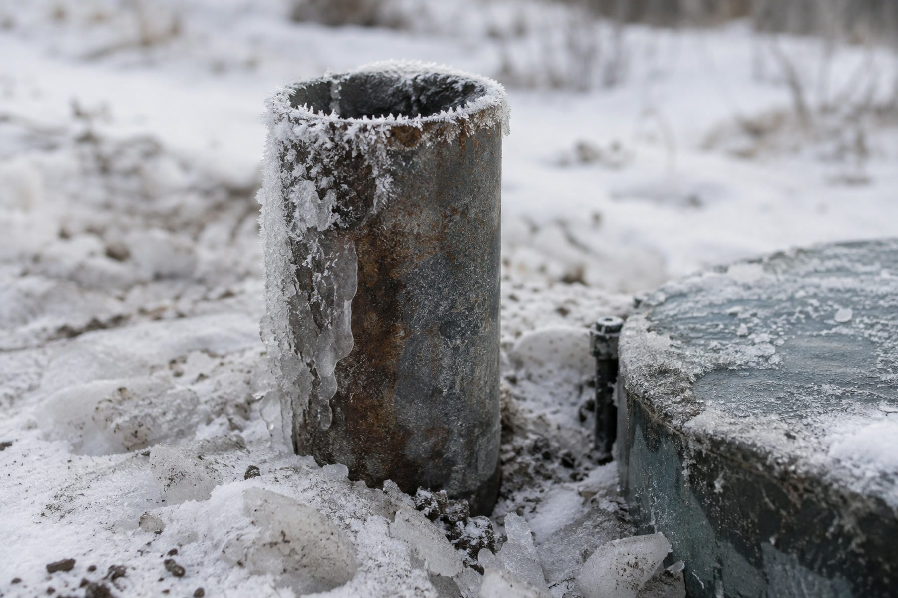

Скважина перемёрзла: как отогреть без последствий
Перемерзание почти всегда означает ошибку в обустройстве, а не аномальный мороз. Сначала о том, как безопасно восстановить подачу, — с отдельным списком приёмов, которые ломают скважину окончательно.
Воды нет, на улице мороз, и первая мысль — что-то надо делать прямо сейчас. Это правильная мысль, но важно сначала понять, где именно лёд, а не хвататься за первый попавшийся способ отогрева: часть распространённых приёмов не просто не помогает, а окончательно ломает то, что можно было бы спасти аккуратным способом.

Где именно образуется лёд
Перемерзание редко происходит в самой скважине на глубине — вода там, ниже уровня промерзания грунта, замёрзнуть физически не может. Лёд образуется там, где труба или узел оказались на глубине меньше расчётной или недостаточно утеплены:
- оголовок скважины — точка выхода обсадной колонны на поверхность, если она не заглублена ниже уровня промерзания и не защищена кессоном или адаптером;
- скважинный адаптер или переходник в обсадной трубе, если врезка сделана выше фактической глубины промерзания на этом конкретном участке;
- трубопровод от скважины к дому — самый частый участок проблемы, потому что именно здесь чаще всего экономят на глубине траншеи или на утеплении, особенно если труба прокладывалась не в сезон промерзания и глубину закладки оценивали на глаз.
Различить, где именно лёд, помогает то, что происходит при попытке открыть кран: если насос включается и слышен звук работы, но вода не идёт совсем — перемычка льда, скорее всего, ближе к дому, в трубопроводе. Если насос не включается вообще или включается и сразу отключается — проблема может быть у оголовка или в самой скважине, и здесь стоит сначала исключить обычные причины отказа автоматики, не связанные с морозом: полный порядок такой проверки — в статье пропала вода в скважине.
Безопасные способы отогрева
Первое правило — начинать с самого щадящего способа и двигаться к более интенсивному, только если предыдущий не сработал за разумное время, а не сразу браться за самый быстрый.
Электрический греющий кабель, намотанный на трубу снаружи (там, где труба доступна для доступа — в колодце, кессоне, открытом участке траншеи), — самый предсказуемый способ: он равномерно прогревает трубу по всей длине контакта, не создаёт локального перегрева в одной точке и подходит для труб из любого материала, включая пластик. Это тот способ, который стоит держать наготове до наступления морозов, а не искать в момент аварии.
Тепловая пушка или обогреватель, направленный на доступный участок трубы или на оголовок в кессоне, — работает медленнее кабеля, но безопаснее прямого огня: прогревает воздух вокруг трубы, а не саму трубу точечно, и риск локального повреждения материала ниже.
Горячая вода, залитая небольшими порциями в доступное пространство вокруг трубы (например, в приямок или кессон, где труба выходит наружу) — работает медленно и требует терпения, но не создаёт локального термоудара, если лить постепенно, а не разом.
Здесь стоит оговорка по безопасности: работа с электрическим оборудованием (греющим кабелем, тепловой пушкой) во влажном или частично затопленном кессоне требует осторожности — сначала обесточить линию там, где это возможно, не касаться контактов мокрыми руками, использовать оборудование с исправной изоляцией и заземлением. Кессон зимой — не менее опасное сочетание воды и электричества, чем летом.
Если ни один из безопасных способов за разумное время не помог, а мороз серьёзный и перемычка льда протяжённая, — это повод вызвать бригаду, а не переходить к более агрессивным методам самостоятельно.
Чего категорически нельзя делать
Список ниже — не рекомендация «лучше не надо», а приёмы, которые физически ломают конструкцию, а не просто не помогают.
- Открытый огонь под пластиковой трубой — горелка, паяльная лампа, костёр вплотную к трубе. Полимерные трубы, из которых в подавляющем большинстве случаев собран наружный трубопровод современной скважины, при прямом контакте с открытым пламенем оплавляются и деформируются локально почти мгновенно — образуется прогар или трещина именно в точке контакта, а не равномерный прогрев по длине. Труба после такого воздействия не восстанавливается, только заменяется на повреждённом участке.
- Кипяток, вылитый разом на пластиковую трубу или в узкое замкнутое пространство кессона — резкий перепад температуры между кипятком и промёрзшим материалом создаёт термоудар, от которого пластик может растрескаться в точке контакта, особенно если труба уже была под механическим напряжением от расширившегося льда внутри неё.
- Самодельные греющие схемы из подручных проводов и обогревателей без защиты от короткого замыкания — в сыром кессоне или траншее риск короткого замыкания и поражения электротоком от самодельной, не рассчитанной на такие условия схемы существенно выше, чем от штатного греющего кабеля с заводской изоляцией и заземлением.
- Резкие удары по промёрзшей трубе с целью «расколоть» лёд физически — труба, ослабленная расширившимся внутри льдом, от удара может лопнуть не там, где лёд, а в соседнем, более тонком месте, и тогда вместо перемерзания получится ещё и механическое повреждение, которое зимой чинить сложнее.
Общий принцип за всеми четырьмя пунктами один: лёд внутри трубы уже создаёт механическое напряжение на материал, и любое резкое или локально агрессивное воздействие добавляет к этому напряжению ещё одно — в сумме труба не выдерживает там, где выдержала бы медленный равномерный прогрев.
Почему это случилось: не аномальный мороз, а ошибка в обустройстве
Отдельный слой мороза сам по себе редко становится единственной причиной: грунт промерзает предсказуемо из года в год, и расчёт заглубления узлов делается именно с расчётом на эту предсказуемость, а не на надежду, что зима будет тёплой. Если перемерзание всё же произошло, причина обычно одна из трёх.
Недостаточная глубина заложения. Точка выхода воды из скважины — дно кессона или место врезки адаптера — и трубопровод к дому должны располагаться ниже расчётной глубины сезонного промерзания грунта для конкретного участка, а не ниже некоего усреднённого значения «как у соседей». Как именно считается эта глубина по формуле из СП 22.13330.2016 и почему единой готовой цифры «для города» не существует — эта развилка вместе с зависимостью от типа грунта уже подробно разобрана в статье кессон для скважины: когда нужен, а когда хватит адаптера, и здесь она не повторяется. Практический вывод из неё для трубопровода тот же, что и для узла оголовка: глубина траншеи под трубу к дому должна быть посчитана, а не выбрана на глаз или скопирована с соседнего участка на другом грунте.
Недостаточное утепление. Даже при формально правильной глубине укладки локальный участок — там, где труба выходит из земли в кессон, огибает фундамент или проходит ближе к поверхности на вводе в дом, — часто оказывается более уязвимым местом, чем основная длина трассы, если его отдельно не утеплили. Именно эти локальные точки перехода чаще всего и перемерзают первыми, даже когда вся остальная труба заложена по расчёту.
Уклон трубы в неправильную сторону. Если трубопровод от скважины к дому не имеет уклона в сторону скважины (или имеет обратный уклон), вода после остановки насоса не стекает обратно в ствол, а остаётся в трубе на всём её протяжении — и именно эта оставшаяся в трубе вода перемерзает первой, даже если сама труба формально заложена достаточно глубоко. Правильный уклон превращает трубу в самодренирующуюся систему: после отключения насоса вода уходит обратно в скважину, ниже глубины промерзания, и в трубе просто нечему застывать.
Что переделать, чтобы не повторилось
Разовый безопасный отогрев решает проблему сегодня, но не устраняет причину — на следующую холодную зиму перемерзание при тех же условиях повторится. Дальнейшие шаги зависят от того, какая из трёх причин выше подтвердилась:
- если дело в недостаточной глубине заложения узла — пересмотреть развилку «кессон или адаптер» и глубину его установки для конкретного грунта участка, что подробно разобрано в статье про кессон, упомянутой выше;
- если дело в утеплении локального участка — добавить теплоизоляцию именно в уязвимых точках перехода, а не по всей длине трассы без разбора;
- если дело в уклоне — переложить проблемный участок трубы с уклоном в сторону скважины, что для уже закопанной трубы означает земляные работы, а не косметическую правку.
Полный обзор того, что входит в грамотное обустройство скважины и как эти узлы должны работать вместе, — в статье что входит в обустройство скважины. Можно ли в принципе бурить и монтировать обвязку зимой, если авария случилась во время строительства нового объекта, — отдельная тема: можно ли бурить скважину зимой. Если после отогрева выяснится, что труба или узел повреждены механически, а не просто перемёрзли, — что из этого чинится самостоятельно, а что нет, разобрано в статье ремонт скважины своими руками.
Определить точную причину перемерзания на своём участке и переделать узел под расчётную глубину и грунт можно при выезде на ремонт и обслуживание.